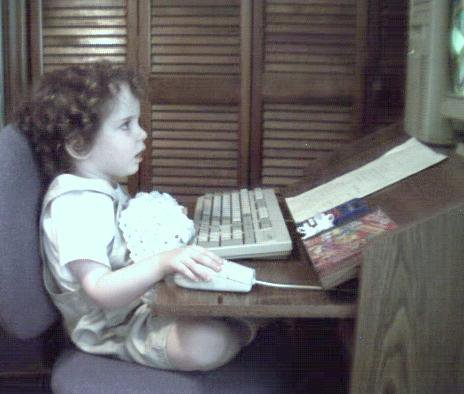

When I was six, I was 100% sure I wanted to be a librarian. I also wanted to be a professional horseback
rider. And a teacher. And an astronaut. And a veterinarian, but only the part where the pets are happy. And
also a firefighter. Six-year-old me was crushed when a teacher broke the news that I couldn't be a horseback
riding librarian astronaut. (How rude, right?)
It turns out that I'm none of those things now.
But, for my entire life, I've loved computers and the multitude of things you can do with such comparatively
small technology. I practically grew up on the computer-- here's photographic evidence!

Anyway, thanks for checking out my site! I'm now a 21 year old college student living in Chapel Hill, NC. I
have a passion for helping others and a passion for tech, so I hope to mix those passions together in my
future career.